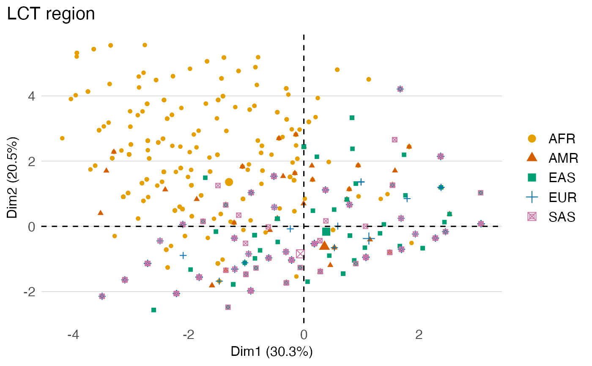

Turns a snpscape object into a data frame that can be passed straight to
FactoMineR::PCA(), with population labels included so that factoextra
plots can be coloured by population.
Details
What PCA does with genetic data
Each person is described by hundreds or thousands of numbers (their genotype at each SNP). Principal component analysis (PCA) finds the directions in which people differ most and summarises them as a few new variables, the principal components. When people are plotted on the first two components, those with similar genotypes appear close together. Because people from the same population share more of their genetic variation, populations often form clusters, and the arrangement of the clusters reflects human population history.
The table
Row names are the people's sample IDs.
The first three columns are
pop,super_popandsex(as factors). TellPCA()they are descriptive, not part of the analysis, withquali.sup = 1:3.The remaining columns are SNPs (allele counts 0, 1 or 2).
SNPs that do not vary among the people in the data are dropped, because
they contain no information and would cause errors in PCA when scaling.
Missing genotypes are left as NA; PCA() replaces them with the SNP's
average.
It is usually best to run filter_snps() with prune_ld = TRUE first.
Examples
lct <- example_lct |>
filter_snps(min_maf = 0.05, prune_ld = TRUE)
pca_table <- as_pca_table(lct)
pca_table[1:5, 1:6]
#> pop super_pop sex chr2:135767177:A:G chr2:135770434:C:G
#> HG01879 ACB AFR male 0 0
#> HG01880 ACB AFR female 0 2
#> HG01882 ACB AFR male 0 0
#> HG01883 ACB AFR female 0 0
#> HG01885 ACB AFR male 0 1
#> chr2:135775243:C:T
#> HG01879 1
#> HG01880 0
#> HG01882 1
#> HG01883 1
#> HG01885 1
if (requireNamespace("FactoMineR", quietly = TRUE) &&
requireNamespace("factoextra", quietly = TRUE)) {
pca <- FactoMineR::PCA(pca_table, quali.sup = 1:3, graph = FALSE)
factoextra::fviz_pca_ind(
pca,
habillage = "super_pop",
palette = superpop_colours,
geom = "point",
title = "LCT region"
) +
theme_jb()
}
